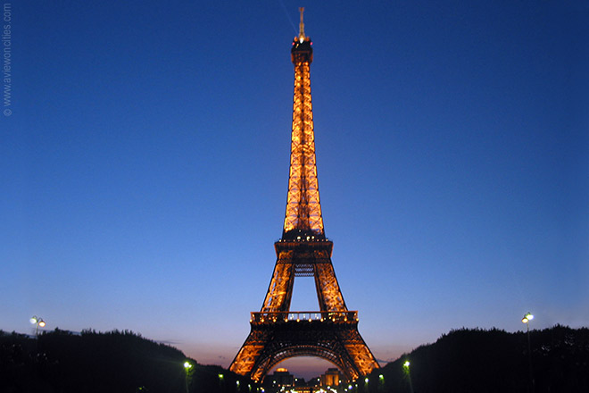
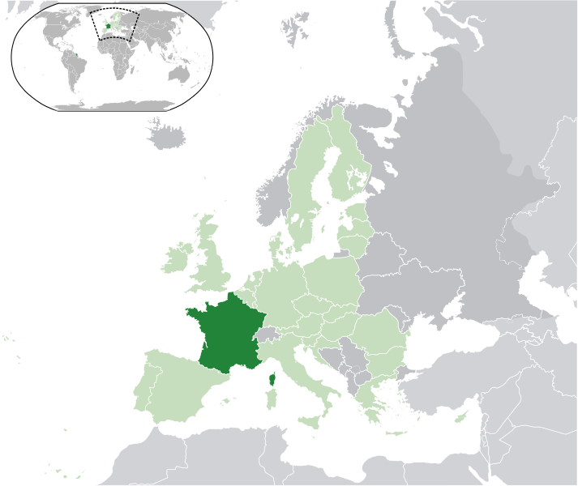
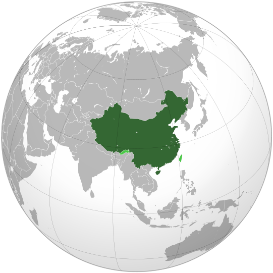
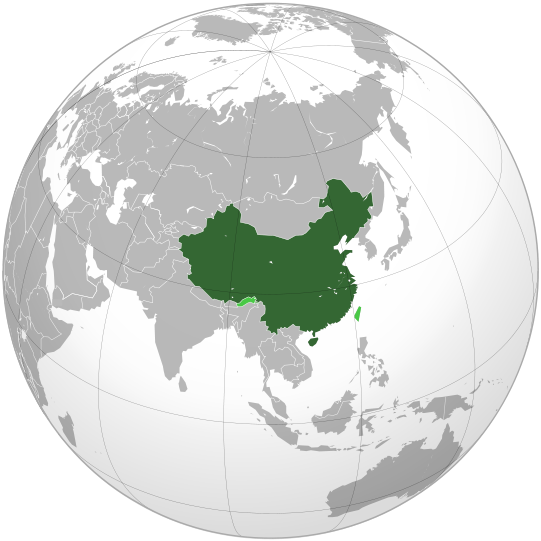
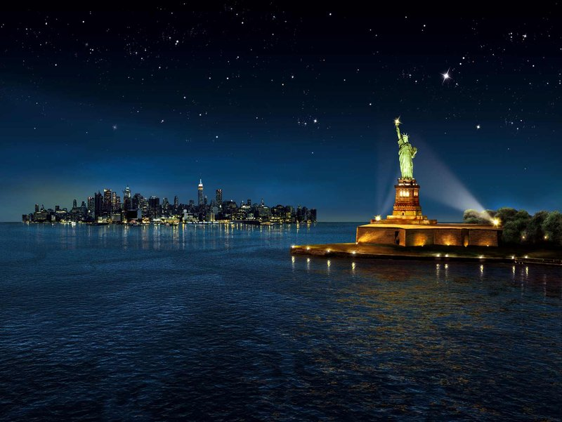
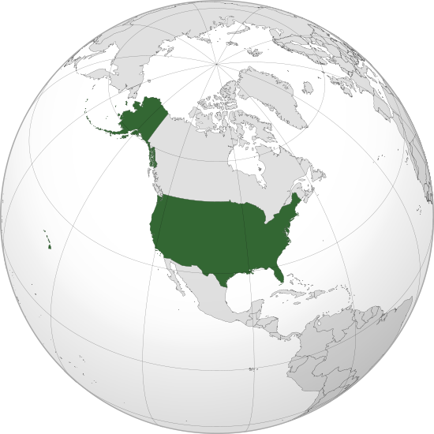
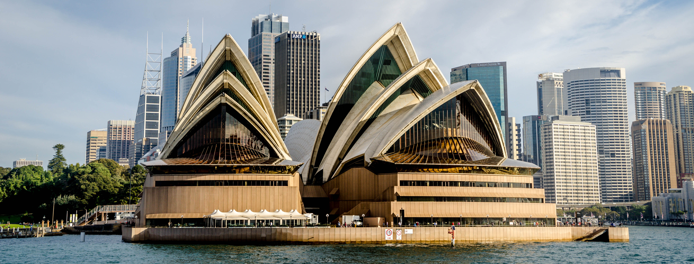
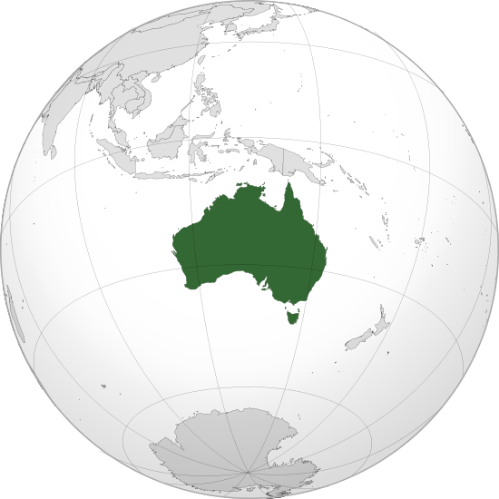

Landmarks of the World!


The Eiffel Tower is an iron lattice tower located on the Champ de Mars in Paris,
named after the engineer Gustave Eiffel,whose company designed and built the tower.Wikipedia
 
The Great Wall of China is a series of fortifications made of stone,
brick, tamped earth, wood, and other materials, generally built along
an east-to-west line across the historical northern borders of China in
part to protect the Chinese Empire or its prototypical states against intrusions
by various nomadic groups or military incursions by various warlike peoples
or forces. Several walls were being built as early as the 7th century BC;
these, later joined together and made bigger, stronger, and unified are now
collectively referred to as the Great Wall. Especially famous is the wall built
between 220-206 BC by the first Emperor of China, Qin Shi Huang. Little of
that wall remains. Since then, the Great Wall has on and off been rebuilt,
maintained, and enhanced; the majority of the existing wall was reconstructed
during the Ming Dynasty. Wikipedia

The Great Wall of China is a series of fortifications made of stone,
brick, tamped earth, wood, and other materials, generally built along
an east-to-west line across the historical northern borders of China in
part to protect the Chinese Empire or its prototypical states against intrusions
by various nomadic groups or military incursions by various warlike peoples
or forces. Several walls were being built as early as the 7th century BC;
these, later joined together and made bigger, stronger, and unified are now
collectively referred to as the Great Wall. Especially famous is the wall built
between 220-206 BC by the first Emperor of China, Qin Shi Huang. Little of
that wall remains. Since then, the Great Wall has on and off been rebuilt,
maintained, and enhanced; the majority of the existing wall was reconstructed
during the Ming Dynasty. Wikipedia


The Statue of Liberty is a colossal neoclassical sculpture on Liberty
Island in the middle of New York Harbor, in Manhattan, New York City.
The statue, designed by Frederic Auguste Bartholdi and dedicated on October
28, 1886, was a gift to the United States from the people of France.Wikipedia


The Sydney Opera House is a multi-venue performing arts centre in Sydney,
New South Wales, Australia. It was conceived and largely built by Danish
architect Jorn Utzon, opening in 1973 after a long gestation that began with
his competition-winning design in 1957.Wikipedia